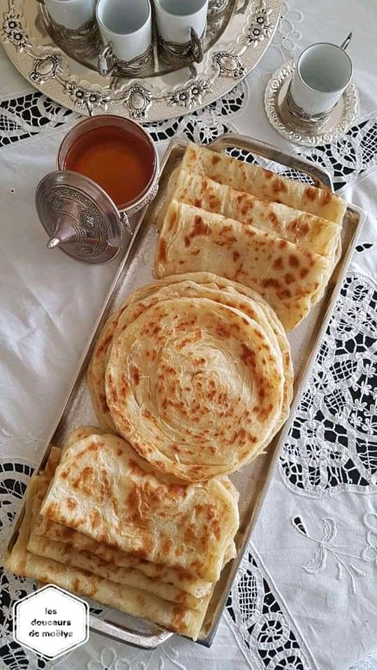

Moroccan Desserts : Mlawi

Description
Mlawi is a famous Moroccan dessert that you can enjoy either with tea or a warm cofe
- 500g of white flour
- 200g of wheat flour
- 1 teaspoon of sugar
- pinch of salt
- ½ teaspoon of instant yeast
- Warm water for the dough as needed
- 1 cup of melted butter
- ½ teaspoon of vanilla
Steps
- In a bowl, put water, yeast, salt, sugar and semolina.
- Mix the ingredients well until combined.
- Add the flour to the semolina mixture and knead the ingredients until you get a cohesive dough.
- Cover the dough with a cloth and leave it aside for about 30 minutes.
- Divide the dough into medium-sized balls.
- For greasing: In a small bowl, mix the oil and baking powder.
- Spread the dough balls on a hard surface greased with a little baking powder mixture until the dough becomes transparent.
- Brush the surface of the dough with the baking powder mixture, then sprinkle semolina on top.
- Fold the dough together until you get a circle shape, then brush it again with the baking powder mixture on both sides
- Heat a wide frying pan over medium heat, then add it, stirring occasionally, until it is cooked on both sides.